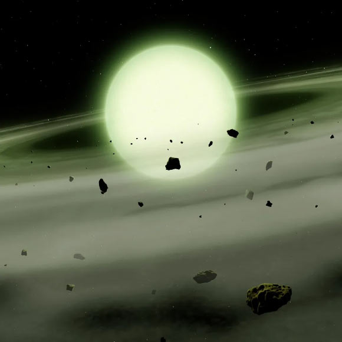

October 16, 2026
A Star That Glows Green: The First Chartreuse White Dwarf

Artist's impression: Mark A. Garlick / University of Warwick
A Star That Glows Green: The First Chartreuse White Dwarf
Astronomers just found a green star. That's not supposed to exist.
The star is called WD J1330+6435 — a white dwarf about 280 light-years away in the constellation Draco, and the first star ever documented glowing a ghostly shade of chartreuse green. It was announced this week by a University of Warwick team, published in the journal RAS Techniques and Instruments.
Why stars have colors
For most stars, color is a thermometer. Cooler stars look orange, stars like the Sun look white, and the hottest ones look pale blue. White dwarfs — the leftover cores of dead stars, roughly half the Sun's mass packed into something Earth-sized — play by a different rulebook. Their average color is white, but their atmospheres can turn into powerful color filters.
How a star turns green
WD J1330+6435 swallowed debris from its own planets: rocky material rich in calcium, lithium, and especially sodium, raining down onto its surface. In an ordinary star, sodium absorbs just one very narrow wavelength of orange — the same orange that gives sodium street lamps their characteristic glow.
But a white dwarf's atmosphere is crushingly dense, on the order of a gram per cubic centimeter — roughly the density of water. Each sodium atom is constantly slammed by surrounding helium atoms, and that bombardment smears the narrow orange absorption band across the yellows, oranges, and some of the reds. Subtract all of that from the star's light, and what you're left with is green.
A survey of star color
The team, led by astrophysicist Mark Hollands with co-author Boris Gänsicke, wasn't hunting for a green star specifically. They were mapping what white dwarfs would actually look like to human eyes — running real stellar spectra through a model of human color vision.
Out of 151 white dwarfs within about 65 light-years, the average color was simply white; only about 3% strayed far from what a plain hot blackbody would look like. But the strays were spectacular:
- Carbon-rich white dwarfs run pink to purple
- Ones polluted by shredded planetary debris lean yellow
- The coolest mixed hydrogen-helium ones glow cyan or pale blue
And the headline bonus: what's likely the reddest star ever recorded — WD J1011+2845, a white dwarf just 48 light-years away in Leo Minor with a deep salmon-pink glow, tinted by carbon dredged up from its own deep interior through a convection zone.
Honest verdict
No aliens, no green sun — just atomic physics running in an atmosphere denser than water, turning a dead star's chemistry into something the universe wasn't supposed to show us. As Hollands put it: "Imagine standing on a planet and looking up at a green star. It feels like something out of science fiction."
Green stars have lived in science fiction for years, including in the recent Supergirl movie. Now one lives in the sky — sort of. What the researchers computed is what the star's light would look like to human eyes up close; the star itself is 280 light-years away and visible only through telescopes.
Source: Reuters, Oct 16, 2026. Paper: M. Hollands et al., "Any colour you like: the diverse chromaticities of white dwarfs," RAS Techniques and Instruments (2026), DOI: 10.1093/rasti/rzag069. Spectra from the Sloan Digital Sky Survey; University of Warwick.
Source: Reuters — read the original report
← Back to latest stories